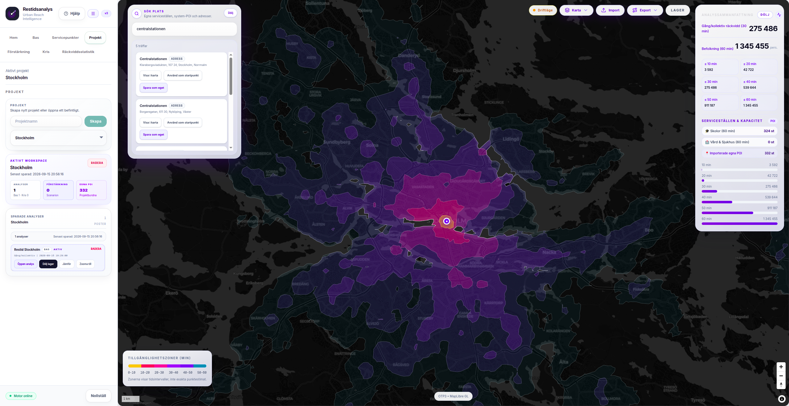
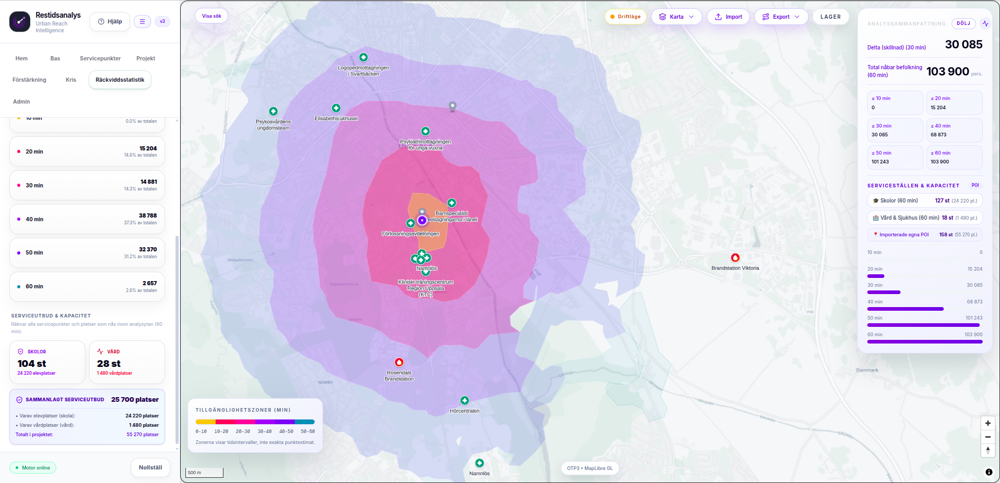
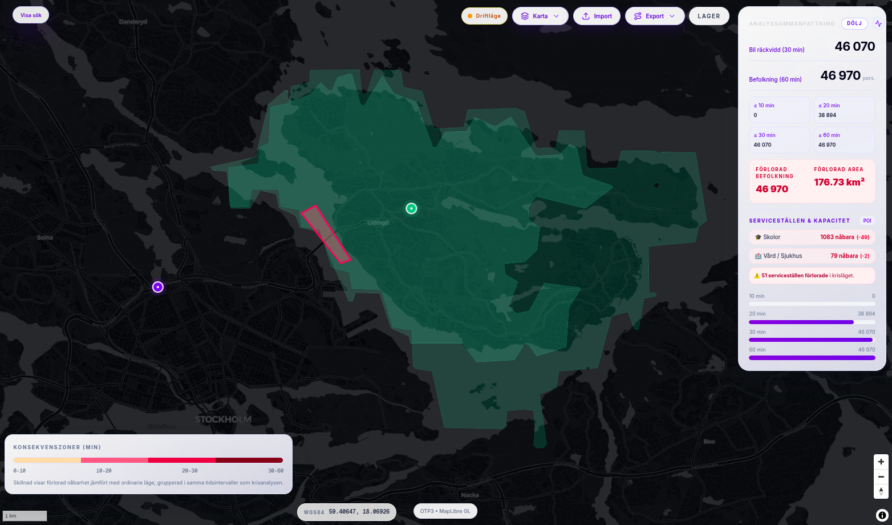
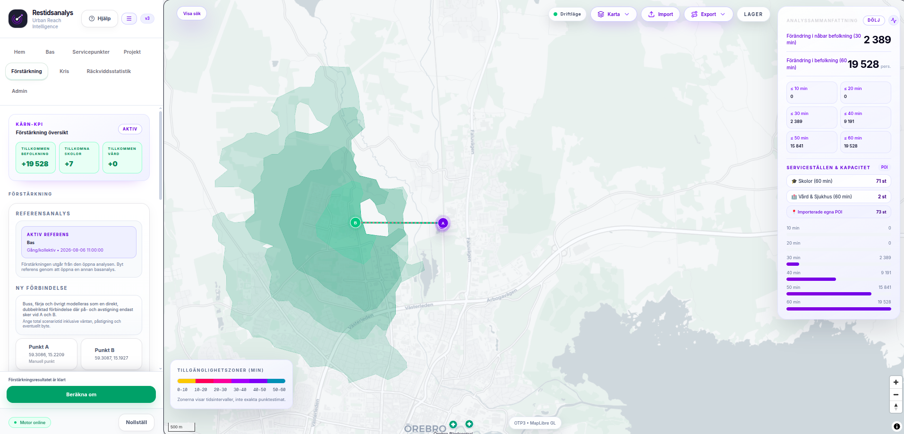
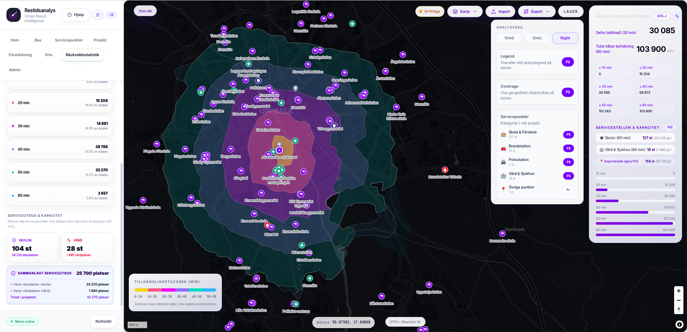
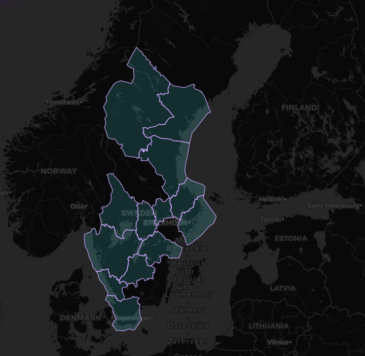

Hur många invånare når viktig service inom 15 minuter?
Analysera verklig tillgänglighet till vård, skolor och annan samhällsservice med gång, cykel, kollektivtrafik och bil. Gå från geografisk fråga till tydligt beslutsunderlag i ett sammanhängande arbetsflöde.
För beslut där tillgänglighet, störning och förstärkning behöver bli tydliga.
Restidsanalys används när ni behöver visa konsekvenser, jämföra alternativ och ta fram beslutsunderlag som håller för dialog, planering och vidare GIS-arbete.
Planering och lokalisering
När ni behöver förstå vad som nås från en plats idag, och hur tillgängligheten skiljer sig mellan områden, färdsätt och tidsmål.
Störning och omledning
När en väg stängs, en länk bryts eller ett nät påverkas, och ni snabbt behöver se vilka invånare, skolor och vårdpunkter som berörs.
Förstärkning och investering
När ni vill testa en ny förbindelse, jämföra scenarier och visa vilken faktisk förbättring ett förslag ger i tillgång till service och restid.
En sammanhållen arbetsyta för tillgänglighet, scenarier och beslutsunderlag.


Vad når invånarna inom vald restid?
Se restidszoner, befolkningsunderlag och samhällsservice utifrån verkliga färdtider — inte bara avstånd.
Välj utgångspunkt
Adress, servicepunkt eller valfri plats i kartan.
Jämför färdsätt
Gång, cykel, bil och kollektivtrafik i samma analysflöde.
Se vilka som nås
Summera befolkning, skolor, vård och kapacitet per tidsintervall.

Vad händer när en viktig väg eller bro stängs?
Markera avstängningen direkt i kartan och se hur tillgänglighet, befolkning och samhällsservice påverkas.
Markera avstängningen
Rita den vägsträcka eller korridor som ska analyseras.
Jämför före och efter
Se förlorad räckvidd, berörd befolkning och omledning i samma analys.

Testa nyttan innan investeringen.
Simulera en ny förbindelse och se hur tillgänglighet, befolkning och samhällsservice förändras innan beslut fattas.
Lägg till en ny förbindelse
Koppla samman två punkter och ange restiden för den nya länken.
Mät tillkommen tillgänglighet
Se hur många fler invånare och servicepunkter som blir nåbara.
Ta vidare underlaget
Exportera resultatet för rapport, dialog eller fortsatt GIS-analys.
Fyra steg från fråga till underlag.
Välj plats
Starta från karta, adress eller servicepunkt.
Lägg till data
Använd systemdata eller komplettera med organisationens egna servicepunkter.
Kör analys
Analysera räckvidd, kris eller förstärkning.
Exportera
Ta resultatet vidare till rapport, GIS eller beslutsmöte.

Komplettera analysen med era egna data.
Lägg till vårdcentraler, skolor, apotek och andra viktiga platser och koppla dem direkt till analyser av tillgänglighet och kapacitet.
Importera egna platser
Importera CSV eller lägg till och redigera platser direkt i kartan.
Analysera tillgänglighet per plats
Se hur många invånare som når varje servicepunkt inom vald restid.
Exportera som underlag
Ta vidare tabeller och kartor till rapport, dialog eller fortsatt analys.
Se Restidsanalys med ett område som är relevant för er.
Vi demonstrerar plattformen utifrån befintlig täckning och anpassar genomgången efter er region, kommun eller frågeställning.

Boka en demo med ett scenario som är relevant för er.
Se hur Restidsanalys kan användas för tillgänglighet, krisberedskap och framtida investeringar — och hur resultaten tas vidare till tydliga beslutsunderlag.